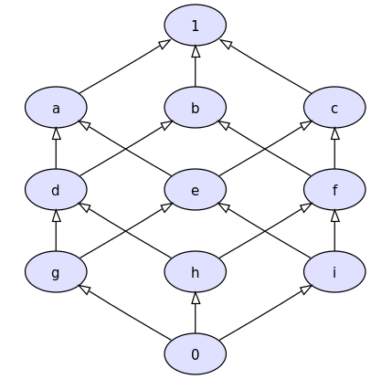
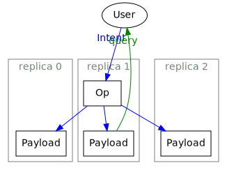

CRDT <> Haskell
Юрий Сыровецкий
Николай Логинов

|
Распределённая система
|
|
⇆ ❌ ⚔️ 👮 |
|
CRDT — Conflict-free Replicated Data Type
|
|
🤝 |
|
crdt
stack repl --package crdt
Полурешётка
Определение 1. Множество $A$ с операцией $(⋄)$ — полугруппа, если эта операция ассоциативна.
Определение 2. Полугруппа $(A, (⋄))$ — полурешётка, если эта эта операция коммутативна и идемпотентна.
Идемпотентность
$ x ⋄ x = x $
Синхронизация не портит данные
Коммутативность
$ x ⋄ y = y ⋄ x $
Можно синхронизировать в любом направлении
Ассоциативность
$ (x ⋄ y) ⋄ z = x ⋄ (y ⋄ z) $
Можно синхронизировать в любом порядке
(множества, $(\cup)$)
$ (X \cup Y) \cup Z = X \cup (Y \cup Z) $
$ X \cup Y = Y \cup X $
$ X \cup X = X $
(ℝ, $\max$)
$ \max (\max (x, y), z) = \max (x, \max (y, z)) $
$ \max (x, y) = \max (y, x) $
$ \max (x, x) = x $
(ℝ, (+)) — полугруппа
$ (x + y) + z = x + (y + z) $
но не полурешётка
$ \cancel{x + x = x} $
Полурешётка в Haskell
base
-- | associativity: (x <> y) <> z == x <> (y <> z)
class Semigroup a where
(<>) :: a -> a -> a
crdt
-- | commutativity: x <> y == y <> x
-- idempotency: x <> x == x
class Semigroup a => Semilattice a
type CvRDT = Semilattice
Set — полурешётка
base
instance Ord a => Semigroup (Set a) where
(<>) = union
crdt
instance Ord a => Semilattice (Set a)
-- instance Ord a => CvRDT (Set a) -- автоматически
Max — полурешётка
base
newtype Max a = Max a
instance Ord a => Semigroup (Max a) where
Max x <> Max y = Max (max x y)
crdt
instance Ord a => Semilattice (Max a)
-- instance Ord a => CvRDT (Max a) -- автоматически
LWW (Last Write Wins)
data LWW a = LWW
{ value :: a
, timestamp :: Timestamp
}
instance Ord (LWW a) where
LWW{timestamp = t1} <= LWW{timestamp = t2} =
t1 <= t2
instance Semigroup (LWW a) where
(<>) = max
instance Semilattice (LWW a)
-- instance CvRDT (LWW a) -- автоматически
Пример из реальности — счётчик лайков
{0:
717, 1: 826,
2: 273}
|
{0: 717,
1:
826,
2: 273}
|
{0: 717, 1: 826,
2:
273}
|
↓
{0: 717, 1: 826, 2: 273}
Grow-only counter
newtype GCounter = G (Map ReplicaId Natural)
increment :: ReplicaId -> GCounter -> GCounter
increment replicaId (G m) =
G (insertWith (+) replicaId 1 m)
query :: GCounter -> Natural
query (G m) = sum m
instance Semigroup GCounter where
G x <> G y = G (unionWith max x y)
instance Semilattice GCounter
-- instance CvRDT GCounter -- автоматически
Проблема CvRDT — размер пересылаемых данных
Commutative RDT (CmRDT)
CmRDT в Haskell
class CausalOrd a where
affects :: a -> a -> Bool
class CausalOrd op => CmRDT op where
type Payload op
apply :: op -> Payload op -> Payload op
type Intent op
makeOp :: Intent op -> Payload op -> Maybe (Process op)
LWW (Last Write Wins)
data LWW a = LWW
{ value :: a
, timestamp :: Timestamp
}
instance CausalOrd (LWW a) where
affects _ _ = False
instance Eq a => CmRDT (LWW a) where
type Payload (LWW a) = LWW a
apply = (<>)
type Intent (LWW a) = a
makeOp value state = Just (assign value state)
Counter
data Counter = Increment | Decrement
instance CausalOrd (LWW a) where
affects _ _ = False
instance CmRDT Counter where
type Payload Counter = Integer
apply op x = case op of
Increment -> x + 1
Decrement -> x - 1
type Intent Counter = Counter
makeOp i _ = Just (pure i)
2P-Set (2-phase set)
data TwoPSet a = Add a | Remove a
instance Eq a => CausalOrd (TwoPSet a) where
Remove a `affects` Add b = a == b
_ `affects` _ = False
instance Ord a => CmRDT (TwoPSet a) where
type Payload (TwoPSet a) = Set a
apply op s = case op of
Add a -> insert a s
Remove a -> delete a s
type Intent (TwoPSet a) = TwoPSet a
makeOp op s = case op of
Add _ -> Just (pure op)
Remove a -> if a `member` s then
Just (pure op)
else
Nothing
Всем известно, что законы классов
Haskell не проверяет
Property-based testing (QuickCheck)
associativity = \x y z -> (x <> y) <> z == x <> (y <> z)
commutativity = \x y -> x <> y == y <> x
idempotency = \x -> x <> x == x
associativity:
+++ OK, passed 100 tests.
commutativity:
+++ OK, passed 100 tests.
idempotency:
+++ OK, passed 100 tests.
Type-level
Ah, type-level Haskell...
{-# LANGUAGE DataKinds #-}
{-# LANGUAGE FlexibleInstances #-}
{-# LANGUAGE GADTs #-}
{-# LANGUAGE OverloadedStrings #-}
{-# LANGUAGE PolyKinds #-}
{-# LANGUAGE QuasiQuotes #-}
{-# LANGUAGE RankNTypes #-}
{-# LANGUAGE ScopedTypeVariables #-}
{-# LANGUAGE TemplateHaskell #-}
{-# LANGUAGE TypeFamilies #-}
{-# LANGUAGE TypeOperators #-}
{-# LANGUAGE UndecidableInstances #-}
Полугруппа с доказательством
class Semigroup a where
type (x :: a) <> (y :: a) :: a
(%<>) ::
Sing (x :: a) -> Sing (y :: a) -> Sing (x <> y)
associativity ::
Sing (x :: a) -> Sing (y :: a) -> Sing (z :: a) ->
((x <> y) <> z) :~: (x <> (y <> z))
(<>) :: (SingKind m, Semigroup m) =>
Demote m -> Demote m -> Demote m
x <> y = withSomeSing x $ \sX ->
withSomeSing y $ \sY ->
fromSing (sX %<> sY)
Список с доказательством
instance Semigroup [a] where
type xs <> ys = xs :++ ys
(%<>) = (%:++)
associativity xs ys zs = case xs of
SNil -> Refl
SCons _ xs' ->
case associativity xs' ys zs of
Refl -> Refl
Max с доказательством
instance SOrd a => Semigroup (Max a) where
type 'Max x <> 'Max y = 'Max (Singletons.Max x y)
SMax x %<> SMax y = SMax (sMax x y)
associativity = undefined
В действии
λ> print ([1, 2] <> [3] :: [Integer])
[1,2,3]
λ> print ([1, 2] <> [3] :: [Int])
error:
• Couldn't match type ‘Demote a’ with ‘Int’
Expected type: [Int]
Actual type: Demote [a]
The type variable ‘a’ is ambiguous
λ> print ([1, 2] <> [-3] :: [Integer])
*** Exception: Negative singleton nat